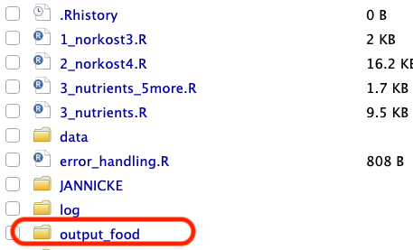
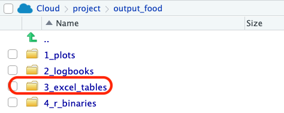
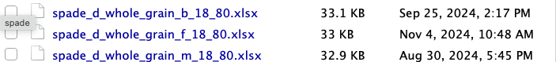

library(SPADE.RIVM)SPADE
Use SPADE program
The SPADE.RIVM package is already downloaded and installed in the workspace. You need to load the package by using the following command every time you open a new Rstudio session.
If there are problems using the package, please contact the Research Software Engineer at Biostatistics Department.
Load the data
The data should be in the format expected by SPADE. The example below works; but if you have a new data set, you’ll need to process it a bit so that it has the necessary columns. (Might be easier to do it inside Excel!)
The column name Nr has been changed into id.
# load the library to read in the data
library(readr)
d <- read_csv("data/norkost4_spade.csv")New names:
Rows: 3928 Columns: 19
── Column specification
──────────────────────────────────────────────────────── Delimiter: "," chr
(1): sexc dbl (18): ...1, Nr, round, fish_total, fish_fatty, fruit_veg,
whole_grain, m...
ℹ Use `spec()` to retrieve the full column specification for this data. ℹ
Specify the column types or set `show_col_types = FALSE` to quiet this message.
• `` -> `...1`head(d)# A tibble: 6 × 19
...1 Nr round fish_total fish_fatty fruit_veg whole_grain milk_dairy
<dbl> <dbl> <dbl> <dbl> <dbl> <dbl> <dbl> <dbl>
1 1 1001 1 0 0 181. 20.8 0
2 2 1003 1 0 0 386. 23.1 0
3 3 1004 1 6.32 6.32 208. 47.9 0
4 4 1005 1 0 0 373. 81.5 570
5 5 1006 1 0 0 253. 130. 0
6 6 1008 1 0 0 298. 31 125
# ℹ 11 more variables: nuts_nosalt <dbl>, nuts_all <dbl>, red_meat <dbl>,
# processed_meat <dbl>, sex <dbl>, age <dbl>, fish_2409 <dbl>,
# dairy_portion <dbl>, procmeat_240925 <dbl>, dairy_240925 <dbl>, sexc <chr># change the second column from Nr to id
colnames(d)[2] <- 'id'
colnames(d) [1] "...1" "id" "round" "fish_total"
[5] "fish_fatty" "fruit_veg" "whole_grain" "milk_dairy"
[9] "nuts_nosalt" "nuts_all" "red_meat" "processed_meat"
[13] "sex" "age" "fish_2409" "dairy_portion"
[17] "procmeat_240925" "dairy_240925" "sexc" When it comes to sex, SPADE expects 1 = male, 2 = female. Double check how it is coded in your data:
d[1:6, c('sex', 'sexc')]# A tibble: 6 × 2
sex sexc
<dbl> <chr>
1 2 female
2 2 female
3 2 female
4 1 male
5 1 male
6 1 male (Optional) Define threshold
This is only necessary if the percentage above (or below) a threshold needs to be computed.
SPADE expects one threshold value per age, so you’ll need to create a data like the one below. In case multiple foods are required, stack them by columns.
In the following example, the thresholds for whole_grain and fish are the same for all ages. They can be different. It could be a good idea to create the data in Excel and then load the data directly into R.
# range: ear (below this value)
ref_ear <- data.frame(
age = seq(18, 80, by = 1),
# different foods
whole_grain = 90,
fish = 20
)
# print the first rows
head(ref_ear) age whole_grain fish
1 18 90 20
2 19 90 20
3 20 90 20
4 21 90 20
5 22 90 20
6 23 90 20You can check how many rows from the data has whole_grain below 90, and also compute the percentage.
sum(d$whole_grain < 90) # 3140 rows[1] 3140sum(d$whole_grain < 90)/nrow(d) # 80% below 90g[1] 0.799389Run SPADE (two parts)
The following code runs for two parts model and female. See below for how to do it for male and both. Note that when specifying frml.ia and frml.if, please follow the SPADE manual.
# spade (two parts) ----
# two parts model needs to specify frml.ia and frml.if
f.spade(
frml.ia = whole_grain ~ fp(age),
frml.if = whole_grain ~ cs(age),
prb = c(25, 50, 75, 95, 97.5)/100,
data = d,
min.age = 18,
max.age = 80,
sex.label = "female",
seed = 29062020,
EAR.names = 'ref_ear',
# UL.names = 'ref_ul',
spade.output.path = "output_food"
)
# find the results in folder output_food- 1
-
frml.ia: needs to be the outcome (whole_grainin this example), as a function of age. - 2
-
frml.if: same as above - 3
-
prb: percentage of habitual intake. Here is how to set them to be 25%, 50%, 75%, 95% and 97.5%. - 4
-
data: the datadyou’ve loaded before - 5
-
min.age, max.age: from 18 to 80. This needs to match the EAR thresholds. - 6
-
sex.label: eitherfemale,maleorboth. SPADE expects sex to be coded as 1 or 2 in the data, while here it is usingfemalerather than code 2. - 7
-
seed: controls the reproducibility. You do not need to change this. - 8
-
EAR.names: the threshold data you’ve set up in the previous step. Can ignore if you do not need to compute the percentage above or below the threshold. - 9
-
spade.output.path: where to save the data. See the example in the next section.
If you need other sex combinations, change sex.label while keeping everything else the same.
# test if it differs for male
f.spade(
frml.ia = whole_grain ~ fp(age),
frml.if = whole_grain ~ cs(age),
prb = c(25, 50, 75, 95, 97.5)/100,
data = d,
min.age = 18,
max.age = 80,
sex.label = "male",
seed = 29062020,
EAR.names = 'ref_ear',
# UL.names = 'ref_ul',
spade.output.path = "output_food"
)
# both gender
f.spade(
frml.ia = whole_grain ~ fp(age),
frml.if = whole_grain ~ cs(age),
prb = c(25, 50, 75, 95, 97.5)/100,
data = d,
min.age = 18,
max.age = 80,
sex.label = "both",
seed = 29062020,
EAR.names = 'ref_ear',
# UL.names = 'ref_ul',
spade.output.path = "output_food"
)Results folder
Once you’ve run the code above, the results are saved in the folder you’ve specified. Here it is output_food. We want to check the excel_tables.


Inside this folder you’ll see the results for the sex combinations you’ve done. Pay extra attention to the time when the files are created, as SPADE does not change the name of the file, so you might want to double check if you’re using the most recent results.
